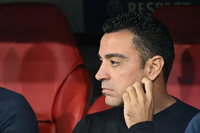

খেলা ডেস্ক
প্রকাশ: ২৫ অক্টোবর ২০২২, ২১: ৩৯
রবার্ট লেভানডফস্কি টুইটার
শুধু বায়ার্নের বিপক্ষে জয় নয়, চ্যাম্পিয়নস লিগের গ্রুপ পর্ব পার হতে হলে বার্সেলোনাকে তাকিয়ে থাকতে হবে ইন্টার মিলান ও ভিক্টোরিয়া প্লজেন ম্যাচের দিকে। সে ম্যাচে প্লজেনের কাছে হারতে হবে ইন্টারের মিলানকে।
ইন্টার-প্লজেন ম্যাচে বার্সা থাকবে দর্শকের ভূমিকায়, ভাগ্যের দিকে তাকিয়ে থাকার কোনো উপায় নেই। তবে যে ম্যাচের সবটাই নিজেদের হাতে, সেই বায়ার্নের বিপক্ষে কি জিততে পারবে বার্সা?
বায়ার্নের বিপক্ষে সাম্প্রতিক অতীত মোটেই সুখকর নয় বার্সার। চ্যাম্পিয়নস লিগে বায়ার্নের বিপক্ষে সর্বশেষ পাঁচ ম্যাচেই হেরেছে বার্সা। এবারের আসরেও প্রথম লেগে ভালো সুযোগ তৈরি করেও বায়ার্নের কাছে হেরেছিল ২-০ গোলে।
জাভি এখনও আশা দেখছেন ছবি: এএফপি
বায়ার্নকে হারানোর বড় সুযোগ পেয়েও কাজে লাগাতে না পেরে খেপেছিলেন কোচ জাভি হার্নান্দেজ। মনের ভেতর সে ক্ষোভ যে পুষে রেখেছেন, তা দ্বিতীয় লেগে মাঠে নামার আগে সংবাদ সম্মেলনে তাঁর কথাতেই স্পষ্ট। বায়ার্নের বিপক্ষে আজ রাতের ম্যাচকে জাভি বলছেন রবার্ট লেভানডফস্কি ও পুরো দলের জন্য প্রতিশোধের ম্যাচ।
এমনিতেই বায়ার্নের বিপক্ষে সব সময়ই খেই হারিয়ে ফেলে বার্সা। সব মিলিয়ে ১২ বারের দেখায় হেরেছে ৯টি ম্যাচে। বায়ার্নকে হারানো তাই কঠিনই বটে, সেই ম্যাচ চিরচেনা ক্যাম্প ন্যুতে হলেও। বোধ হয় তাই কোচ জাভি তাঁর দলকে তাতিয়ে দিতেই এমন কথা বলেছেন।
লেভানডফস্কিকে আলাদাভাবে উল্লেখ করারও কারণ আছে। একে তো লেভার বায়ার্নের সঙ্গে পুনর্মিলনীটা সুখের হয়নি। তাই হয়তো লেভাও চান হিসাবটা পুষিয়ে দিতে। আর জিততে হলে জ্বলে উঠতেই হবে এই পোলিশ স্ট্রাইকারকে। বায়ার্ন মিউনিখ থেকে এ মৌসুমেই বার্সেলোনায় নাম লেখানোর পর সব প্রতিযোগিতা মিলিয়ে করেছেন বার্সার হয়ে সর্বোচ্চ ১৫ গোল।
ফুটবল থেকে আরও পড়ুন